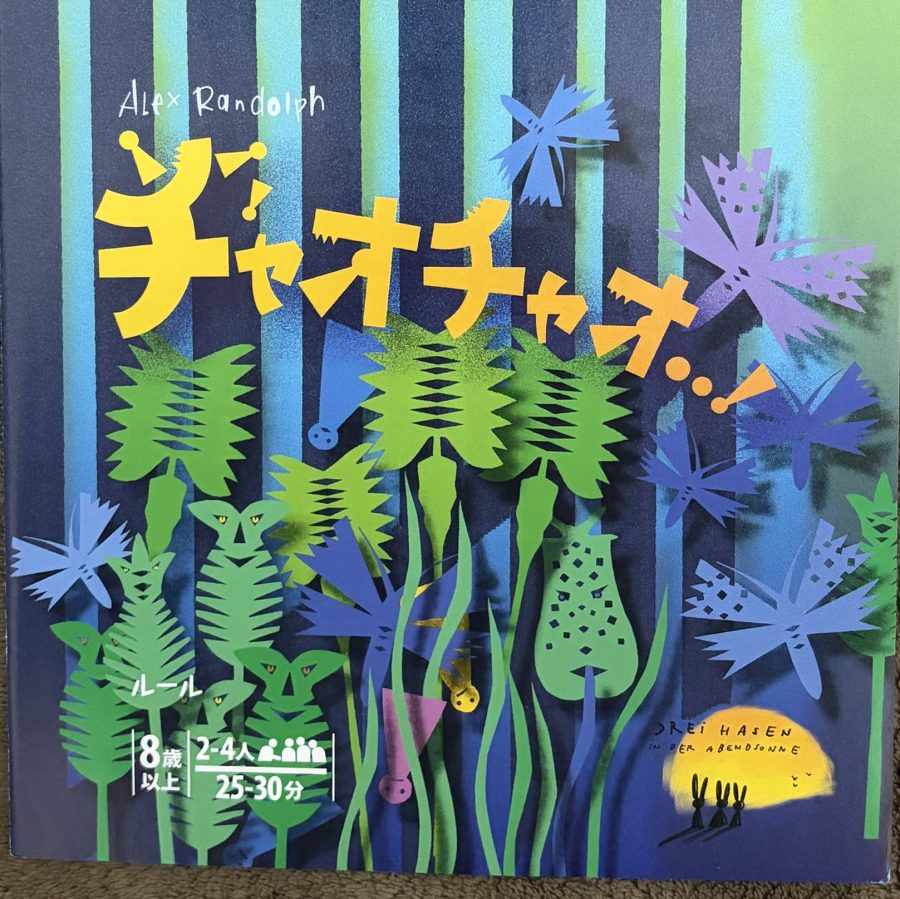
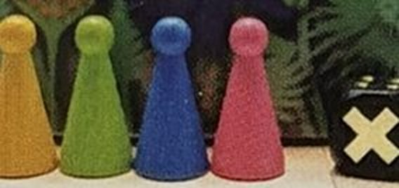
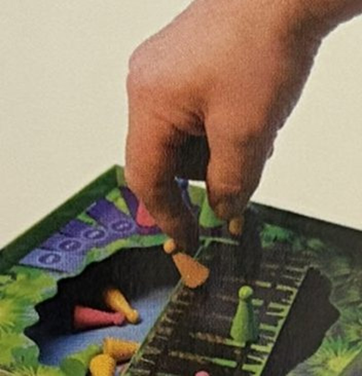
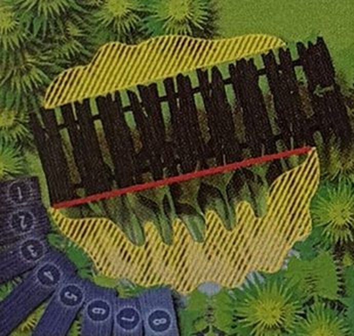
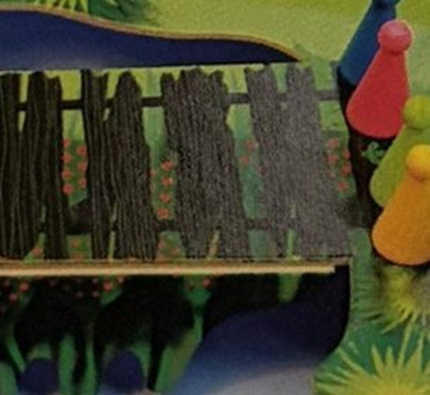
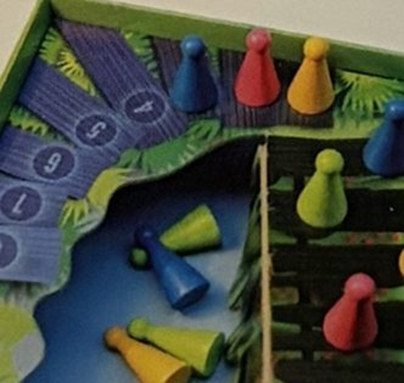
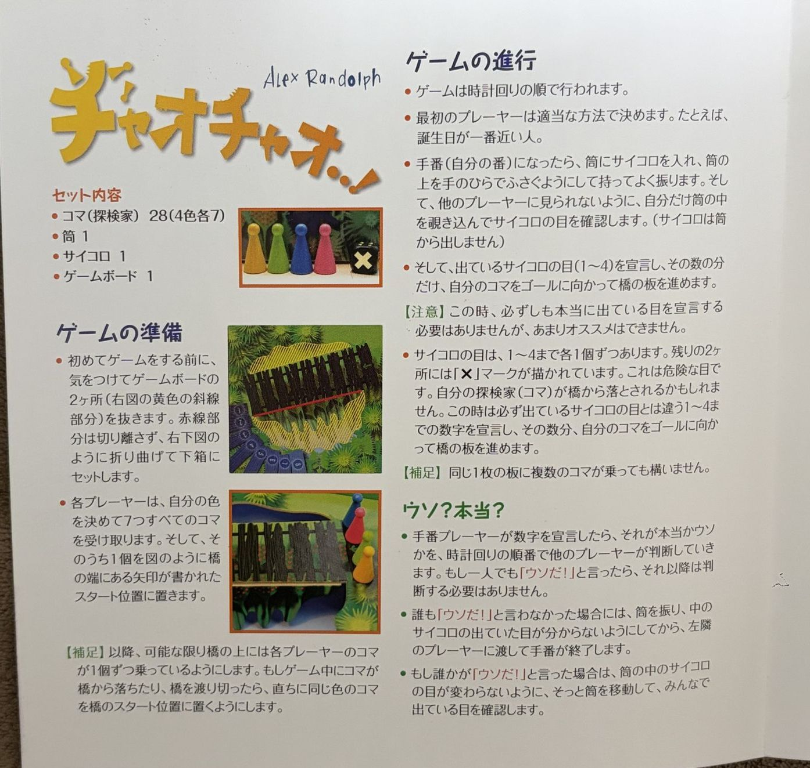
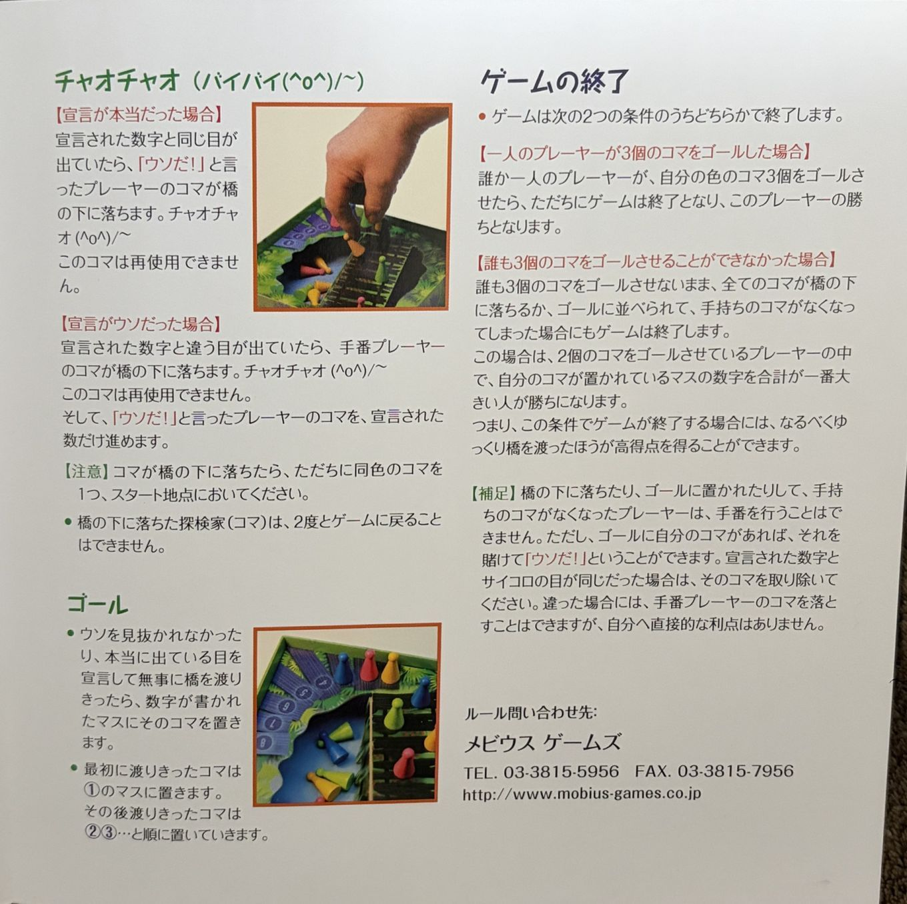
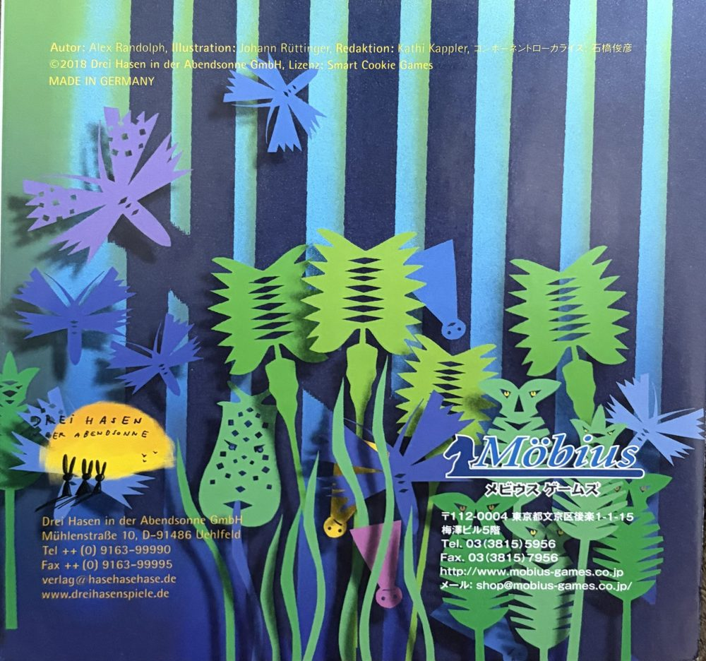

ウソを見抜け！ ジャングルのつり橋渡り
探検家たちがボロボロのつり橋を渡ります。筒の中のサイコロは自分しか見られません。出た目を言って進みますが、ウソをついてもいい。ほかの人はそれを信じるか、「ウソだ！」と言うかを決めます。見破られた方の探検家は橋から落ちて「チャオチャオ（バイバイ）」です。
勝ち方
- 自分の色のコマを3個ゴールさせたら、その場で勝ち。
- 誰も3個に届かないまま全員のコマが尽きたら、ゴールに2個置いている人の中で、置いたマスの番号の合計が一番大きい人の勝ち。番号は渡りきった順に①②③…なので、あとから渡った方が高得点です。
手番でやること（4つだけ）
筒にサイコロを入れ、手でふたをして振る
自分だけ筒の中を見る。サイコロは出さない
1〜4のどれかを言い、その数だけ橋の板を進む
左隣から順に「信じる？ウソだ？」
サイコロの目
✕が出たら必ずウソ。出ていない1〜4のどれかを言います。

「ウソだ！」と言われたら
筒の中の目が変わらないよう、そっと動かしてみんなで確認します。
本当だった
「ウソだ！」と言った人のコマが橋から落ちる。手番の人は宣言どおり進む。
ウソだった
手番の人のコマが落ちる。「ウソだ！」と言った人のコマが、宣言された数だけ進む。
誰も言わなかった
筒を振って目をまぜてから、左隣に渡す。

できること
- 本当の目でも、わざとウソの数を言う（ルール上OK。ただし公式は「あまりおすすめしない」）
- 他人の宣言に「ウソだ！」と言う（左隣から順番に聞かれる）
- 同じ板に何個コマが乗っていてもOK
- 橋にコマがなくても、ゴールに自分のコマがあれば、それを賭けて「ウソだ！」と言える
やってはダメなこと
- サイコロを筒から出す・他人に目を見せる
- ✕なのに「✕」と言う（1〜4以外は宣言できない）
- 「ウソだ！」の順番を飛ばす（左隣から時計回り。一人言った時点で打ち切り）
- 誰も指摘しなかったのに、振らずに筒を渡す（次の人に前の目がわかってしまう）
- 落ちたコマを再び使う
コツ
- ✕は3回に1回出ます。「本当は正直、✕のときだけウソ」という人の宣言は、だいたい3回に2回は本当です。疑うなら根拠のあるときに。アプリの試算
- 指摘はリスクがあります。外れると落ちるのは自分の橋の上のコマ。ゴール目前のコマを持っているときほど慎重に。逆に、スタートにいるコマなら失うものが少ないので強気に言えます。戦略の目安
- 当てると進めます。ウソを見破ると、宣言された数だけ自分のコマが進みます。大きい数（4）のウソを見破るとおいしい。
- 全滅決着も狙えます。3個ゴールが無理そうなら、2個目をゆっくり遅くゴールさせて番号の合計を大きくする手もあります。
- 毎回同じ数を言う、✕のとき目が泳ぐ…などのクセを読み合うのがこのゲームの醍醐味です。
セットアップ
人数
人数でルールは変わりません。使うコマの色数だけが変わります。
準備チェック


常に守る置き方
橋の上には、できる限り各プレイヤー1個ずつコマが乗っている状態を保ちます。コマが落ちたりゴールしたら、すぐ同じ色の次のコマをスタートに置きます。

拡張
チャオチャオに拡張はありません。切り替える項目はなく、どの人数でも同じルールです。
手番チェックリスト（いつでも確認用）
- 筒は手のひらでふたをして振る。覗くのは自分だけ
- ✕なら1〜4のどれかを言う（必ずウソ）
- 左隣から順に「ウソだ！」か聞く。一人でも言えば終わり
- 落ちた・ゴールしたコマがあれば、すぐ同色をスタートへ補充
- 誰も指摘しなかったら筒を振ってから左隣へ
早見・迷ったら
結果の早見表
| 場面 | 手番の人 | 「ウソだ！」と言った人 |
|---|---|---|
| 誰も言わない | 宣言の数だけ進む | － |
| 指摘 → 本当だった | 宣言の数だけ進む | 橋の上のコマが落ちる（橋にコマがなければ、賭けたゴールのコマを取り除く） |
| 指摘 → ウソだった | 橋の上のコマが落ちる | 宣言の数だけ進む（ゴールのコマを賭けた人は進めない） |
落ちたコマ・ゴールしたコマの分は、手持ちがあれば同色を即スタートへ。
根拠の見分け方
ルール本 日本語版ルールに書いてあること 英語ルール 英語版ルールの要約（RulesPal） 解釈 ルールに明記がなく、このアプリでの扱い方を示したもの。卓で合意して決めてください。
メビウスゲームズの公開FAQは見つかりませんでした。ルール本記載の問い合わせ先：メビウスゲームズ（03-3815-5956）。
ルール本（補正済み写真）


